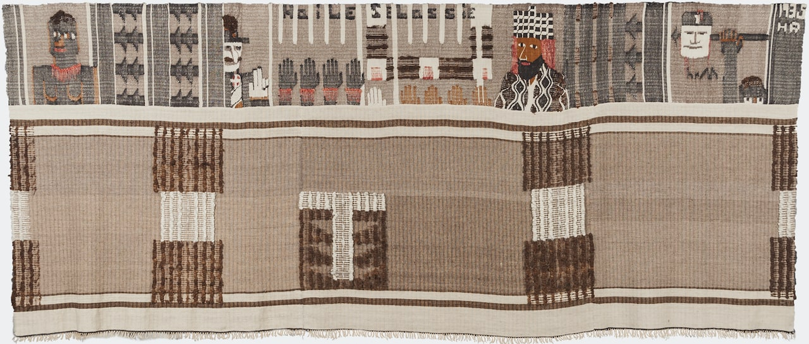
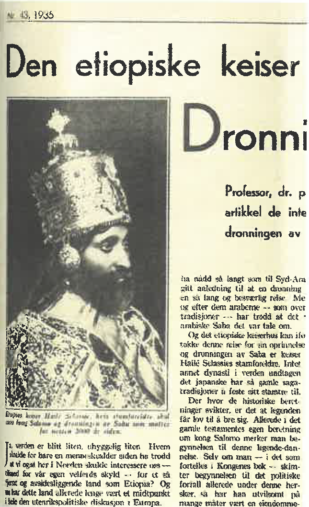

Ethiopia (1935)
Take some time to closely look at and analyze Hannah Ryggen's Ethiopia tapestry. What details do you notice first and why? How did Ryggen use the elements of art and principles of design within the tapestry? After spending some time analyzing Ethiopia, read the following excerpt from Marit Paasche, Hannah Ryggen: Threads of Defiance (Chicago: The University of Chicago Press, 2019).

Hannah Ryggen, Ethiopia, 1935. Tapestry woven in wool and linen, with elements of pile, 160 x 380 cm. Nordenfjeldske Kunstindustrimuseum, Trondheim.

Haile Selassie, Emperor of Ethiopia, pictured in a news item printed in Ukebladet Hjemmet no. 43, October 1935.
Denunciations
The composition of Ethiopia (Etiopia) (1935) is dominated by two horizontal bands. The lower one is entirely occupied by an abstract pattern, while the upper contains figures, hands, spears and inscriptions. This tapestry is large, and the interplay between vertical and horizontal lines creates a distinctive rhythm. The lower band is made of three pieces sewn together, but apart from subtle differences in the grey-brown background hue, the colour scheme is consistently maintained in all three. As a contrast, Ryggen has woven in geometric forms in untreated dark brown and natural white wool.
The figures in the upper register relate to Italy's invasion of Ethiopia. Here Ryggen has also introduced a red tone: in the African woman on the far-left side, for the bracelets on the wrists of the dark-skinned hands and in the figure of Emperor Haile Selassie. This upper band is in effect a framework for the figures. Ryggen had set up the warp threads originally intending to weave a pillow cover, "but then I saw that it was so beautiful on the surface, and when I subsequently had done the first negro, the rest just fell into place."
The area between the African woman and the white male figure to her right is taken up with an abstract pattern, elements of which resemble spear tips. The white man is wearing a hat, and his sun cross, the symbol of the Nasjonal Samling, the Norwegian far-right party, and also of other Nazi-sympathizing parties is clearly visible. He is probably the French politician Pierre Laval, who was the spokesperson for France in negotiations with Italy. Albert Steen suggests he might also be the Italian ambassador to Ethiopia, who had sworn his allegiance to Selassie just before the Italians began bombing Ethiopian cities.
Below the simple yet intricate ornamentation that contains the words "Haile Selassie" is a row of nine hands—four black, one white and four yellowish-brown. Ethiopia's emperor is imposing in all his magnificence, and Ryggen's depictions of Selassie bears a certain resemblance to an image of him printed in the weekly Ukebladet Hjemmet in 1935. Further to the right, an African man holds Mussolini's head aloft on a spear, under which is inscribed "hr M": Hannah Ryggen could hardly have made her sentiments regarding the dictator any clearer.
A protest against the wardaughters
The Norwegian press devoted many column inches to the conflict between Italy and Ethiopia (then also known as Abyssinia). Both the liberal left newspaper Dagbladet and the Trondheim-based Arbeider-Avisen covered the issue in detail. The latter reported that Italy had mobilized 10 million men and that negotiations in Geneva between Italy and the League of Nations had stalled. Mussolini wanted an empire, but potential targets for conquest were limited. The entire African continent, with the exception of Ethiopia, was already colonized by European countries. Ethiopia's geographical location, between the two existing Italian colonies of Somalia and Eritrea, made the choice an obvious one: with Ethiopia, Mussolini would gain one unified colony with ports and large areas of productive land. Additional motivating factors were a desire for revenge and national pride.
The situation generated significant international attention and demonstrated the impotence of the League of Nations, which could neither protest its own members (Ethiopia was one) nor intervene against militarily aggressive ones. In September 1935 the conflict escalated, and by 3 October, war between Italy and Ethiopia was a fact. The headline on Arbeider-Avisen's front page ran: "Was has begun. Adua bombed. Fascist troops mobilized yesterday. Mussolini's speech a battle call." ("Krigen er begynt. Adua bombarderes. Enkrigersk tale av Mussolini.") In an attempt to resolve the conflict, the so-called Hoare-Laval Pact was proposed. The Pact, which would essentially allow Italy to partition large areas in Ethiopia, was drafted by the then British Foreign Secretary Sir Samuel Hoare and the French politician Pierre Laval, with the intention of maintaining good relations with Mussolini. It encountered considerable international opposition, however, and led to Hoare's resignation in December 1935. Laval was also forced to resign, but with the Nazi's assistance he later became part of the Vichy regime in France (after the war he was tried and executed).
The Ethiopian army was poorly equipped; most of its soldiers had only hand-weapons with which to defend themselves. Forced to flee, Haile Selassie appealed to the League of Nations, pleading for military support. After delivering his acclaimed speech, he concluded by remarking: "It is us today. It will be you tomorrow." The League's response, however, was evasive, and resulted in no more than an economic and trade boycott of Italy. Such a passive attitude was adopted because Britain and France were then courting Mussolini as an ally against Hitler. Only when Italy officially entered the Second World War on the side of the Germans did the British come to Ethiopia's aid militarily and help secure its independence.
Many on the left saw the League of Nations' weakness in response to Mussolini's invasion of Ethiopia as a stain on its reputation. Hannah Ryggen was no exception. Ethiopia is a castigation against an ineffective and apathetic Europe, woven in outrage over the course of just one month as a protest against the war:
An impromptu tapestry
woven in haste!
black heads—white diplomats
in between clubs and spears,
and throughout
my determination
so nail Mussolini
with a black man's spear!
In contrast to Fishing in the Sea of Debt, Ethiopia is marked by a more modern two-dimensional idiom, with several sections consisting of a monochrome expanse and geometric forms. In a certain way, it references an earlier work, Squall (Verhau) (1928), but in Ethiopia the colours and geometric forms are used to express historical persons and a specific event that occurred during Ryggen's lifetime.
Ethiopia is striking in its combination of refinement and authority. That a woman living in Ørlandet, a remote region of Norway, in an austere house without running water or electricity, would devote time to denouncing Mussolini and the fascists' actions in Ethiopia in a weaving is a powerful testimony. As Tora Sandal (later Sandal Bøhn), a close friend of Ryggen's and employed at the National Museum of Applied and Decorative Arts in Trondheim, wrote: "With the Ethiopia tapestry, Hannah Ryggen embarked on her impressive series of topical weavings. It was no longer party politics in some narrow sense that interested her, but a greater, universally human sense of what is just and what is reprehensible in international politics."
That Ethiopia functioned as a highly effective denunciation is evident from the fact that it was censored. Out of fear of offending the Italian representatives, the section depicting Mussolini's head on a spear was folded over when the work was exhibited in the Norwegian pavilion at the Paris World's Fair in 1937. Ryggen referred to this in a latter to Andreas Schjoldager: "The Ethiopia tapestry has been accepted by Brukskunst for the New York exhibition. As long as it isn't hung folded, as it was in Paris, I'll be happy." The Paris World's Fair also included Picasso's Guernica (1937) in the Spanish pavilion. This painting, referred to by the Norwegian newspaper Dagbladet as "the civil war picture," would also be shown at the Artists' House (Kunstnernes Hus) in Oslo, thanks to a coordinated effort by gallerist Paul Rosenberg and the Norwegian painter, critic and art dealer Walther Halvorsen. The exhibition, "French Art" ("Fransk kunst"), which opened on 10 January 1938, also displayed works by Georges Braque, Henri Matisse and Henri Laurens.
Further Reading
If you are interested Reading more about Hannah Ryggen, check out the following two publications, both available through the University of Toronto Libraries.